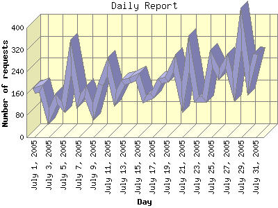

Report generated by Analog 6.0 and Report Magic 2.21
|
Web Server Statistics for "Harish Narayanan (hnarayan) - July 2005" Report generated by Analog 6.0 and Report Magic 2.21 |
The Daily Report identifies the activity for each day within the reporting period. Remember that one page hit can result in several server requests as the images for each page are loaded.

| Day | Number of requests | Number of bytes transferred | Percentage of the bytes | Percentage of the requests | |
|---|---|---|---|---|---|
| 1. | July 1, 2005 | 169 | 2.002 MB | 0.84% | 2.74% |
| 2. | July 2, 2005 | 177 | 5.595 MB | 2.36% | 2.87% |
| 3. | July 3, 2005 | 75 | 1.493 MB | 0.63% | 1.22% |
| 4. | July 4, 2005 | 140 | 7.737 MB | 3.26% | 2.27% |
| 5. | July 5, 2005 | 111 | 5.988 MB | 2.52% | 1.80% |
| 6. | July 6, 2005 | 293 | 8.488 MB | 3.58% | 4.75% |
| 7. | July 7, 2005 | 132 | 8.817 MB | 3.72% | 2.14% |
| 8. | July 8, 2005 | 166 | 3.471 MB | 1.46% | 2.69% |
| 9. | July 9, 2005 | 94 | 3.904 MB | 1.65% | 1.52% |
| 10. | July 10, 2005 | 193 | 13.237 MB | 5.58% | 3.13% |
| 11. | July 11, 2005 | 259 | 8.067 MB | 3.40% | 4.20% |
| 12. | July 12, 2005 | 141 | 6.220 MB | 2.62% | 2.29% |
| 13. | July 13, 2005 | 200 | 5.831 MB | 2.46% | 3.24% |
| 14. | July 14, 2005 | 208 | 7.993 MB | 3.37% | 3.37% |
| 15. | July 15, 2005 | 220 | 7.682 MB | 3.24% | 3.57% |
| 16. | July 16, 2005 | 140 | 2.020 MB | 0.85% | 2.27% |
| 17. | July 17, 2005 | 153 | 4.849 MB | 2.04% | 2.48% |
| 18. | July 18, 2005 | 204 | 5.385 MB | 2.27% | 3.31% |
| 19. | July 19, 2005 | 209 | 8.957 MB | 3.78% | 3.39% |
| 20. | July 20, 2005 | 270 | 7.090 MB | 2.99% | 4.38% |
| 21. | July 21, 2005 | 145 | 14.890 MB | 6.28% | 2.35% |
| 22. | July 22, 2005 | 306 | 11.241 MB | 4.74% | 4.96% |
| 23. | July 23, 2005 | 138 | 7.018 MB | 2.96% | 2.24% |
| 24. | July 24, 2005 | 138 | 3.140 MB | 1.32% | 2.24% |
| 25. | July 25, 2005 | 285 | 8.573 MB | 3.62% | 4.62% |
| 26. | July 26, 2005 | 231 | 9.757 MB | 4.12% | 3.75% |
| 27. | July 27, 2005 | 279 | 11.095 MB | 4.68% | 4.53% |
| 28. | July 28, 2005 | 183 | 4.659 MB | 1.97% | 2.97% |
| 29. | July 29, 2005 | 397 | 10.530 MB | 4.44% | 6.44% |
| 30. | July 30, 2005 | 204 | 12.734 MB | 5.37% | 3.31% |
| 31. | July 31, 2005 | 305 | 18.670 MB | 7.87% | 4.95% |
Most active day July 11, 2005 : 117 pages sent. 397 requests handled. 11,041,095.00 served.
Daily average: 198 requests handled. 7.649 MB served.
This report was generated on August 2, 2005 20:36.
Report time frame July 1, 2005 00:03 to July 31, 2005 23:54.
| Web statistics report produced by: | |
 Analog 6.0 Analog 6.0 |  Report Magic 2.21 Report Magic 2.21 |